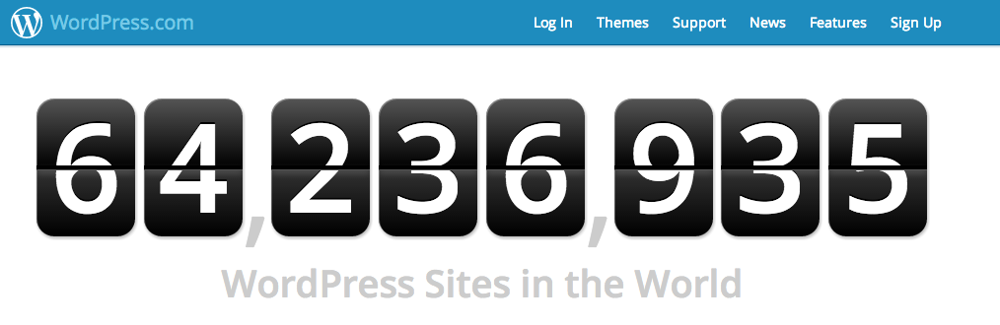

Web Management, 1IK424
Linnéuniversitetet, VT2013
Wordpress part I

WordPress
Vad är WordPress?
- Ett CMS (Content Management System)
- Wordpress.org vs. wordpress.com
- Fritt att använda, kräver webbserver och databas (webbhotell)
- En kärna, flera olika utseenden (teman)

Vårt mål
- Kunna skapa en dynamisk webbplats (blogg, sidor, menyer o.s.v.)
Dagens agenda
- Introducera begrepp, förstå "dashboard", vårt första tema
- Post, Pages, Custom Post Type
- Themes, Widgets, plugins
- Categories, Tags, taxonamy
- Include files, "the loop", template parts
Resurser
http://codex.wordpress.org/

Posts vs. Pages
- Post - "Att posta en artikel/inlägg"
BILD
- Pages - Mer statiskt innehåll, Sällan uppdaterade
BILD
Att märka upp sina poster
-
Category - En post kan tillhöra flera kategorier (News, Design, Programming...)
BILD
-
Tag - Ett eller flera nyckelord man ger sin post (Responsive design, PHP, WP Themes...)
BILD
- Custom taxonomy - ???
Genom att märka upp information kan man enklare strukturera, sortera, söka och leda användaren rätt
Dashboard
Administrationsgränssnittet i Wordpress

Introducerar begreppen via wp-admin
Skapa category, tags, och posta ett antal
inlägg med bilder.
Att pimpa wordpress
Möjligheter att skräddasy sin WordPress-applikation
- Themes - Layout, CSS, Hur allt ska se ut och presenteras
- Widgets - Små delar som kan infogas i en sida med specifik funktionalitet, Kalender, "senaste kommentarerna"...
- Plugins - Ren PHP-programmering som utökar WordPress grundläggande funktionallitet
Exempel - Teman
Byter utseende på din WordPress-applikation.
Finns massor av färdiga "themes".
BILDER PÅ OLIAK TEMAN
Exempel - Widgets
BILDER PÅ OLIAK widgets
Exempel - Plugin
BILDER PÅ OLIAK Plugin
Att byta ett tema och installera ett plugin
Välj ett Tema och visa att det inte går att ladda ner
via wordpress.
Att tänka på...
Problem med för mycket plug-in
och "knasiga" teman
- Prestanda - dåligt kodade plugin
- Problem, buggar - Dåligt kodade plugin
- Fungerar inte med nyare versioner av WordPress - Versionskonflikt
- För plottrigt
Kolla alltid vad andra tycker, läs på innan du installerar ett plugin...
http://wordpress.org/extend/plugins/
Skapa ett eget tema
MÅL: Bild på powerpointbild, Ta morgans bild och modifiera lite
Hur kommer man igång
BILD PÅ FILSTRUKTUR - wp-content
Vad kan ingå i ett tema:
- Template files: En eller flera php-filer som visar innehållet (HTML och PHP)
- Stylesheet file: "style.css", Definierar utseendet på temat. Innehåller en deklaration för temat
- Functions.php: När du behöver skriva mer php-kod för att utöka funktionalliteten
- Andra filer: JavaScript, bilder o.s.v.
The stylesheet
Theme declaration:
Alla teman ska ha en deklation där metainformation om temat ska ingå:
BILD - Visa de olika delarna samt några små vanliga regler
Vad kan ingå i ett tema:
- Template files: En eller flera php-filer som visar innehållet (HTML och PHP)
- Stylesheet file: "style.css", Definierar utseendet på temat. Innehåller en deklaration för temat
- Functions.php: När du behöver skriva mer php-kod för att utöka funktionalliteten
- Andra filer: JavaScript, bilder o.s.v.
Template files
Någonstans måste vi ju tala om vart innehållet ska finnas.
Man kan ha flertalet med template-filer som läses in hierarkiskt
Vi börjar med att skapa en index.php.
Skapa en sida som skriver ut bloggens titel, bygg på sidan med en header,
en layout.
Hitta sida med layout som jag tagit from HTML Dog
Få in stylesheet och bilder
Att dela upp din sida i delar
Så vi ska bara ha en index-fil?
BILD PÅ OMRÅDEN (header, content, sidebar, footer, left-sidebar)
Eller kan vi struturera upp det?
Att bryta ut koden
Vart lägger jag statiska resurser?
Layout. Vart lägger jag bilder, javascript o.s.v.
Add a loggo.
Vi har nu en struktur på vår sida
Men all data då?
Vart hamnar våra postade inlägg?
Hur visar jag upp all information?
The Loop
Det som drar data ur databasen kallas "The Loop". Vare sig det handlar om
ett antal poster (while) eller en enskild Post.
Enklaste sättet att förstå hur man använder The Loop är att se ett exempel.
Template tags
"Template tags" är nycklen till hur vi hämtar dynamiskt innehåll. Det finns flertalet
tillgängliga i Wordpress, uppdelade på olika kategorier. Håll koll!
http://codex.wordpress.org/Template_Tags
Några vanliga Post template tags
- the_title()
- the_permalink()
- the_content()
- the_ID()
- post_class()
Uppgift till nästa gång
Fyll blogg med data - Bli bekväm med admingränssnittet
Testa!
 Detta verk är licensierat under en
Creative Commons Erkännande-IckeKommersiell-DelaLika 3.0 Unported Licens.
Detta verk är licensierat under en
Creative Commons Erkännande-IckeKommersiell-DelaLika 3.0 Unported Licens.